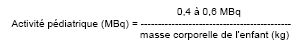

RÉSUMÉ DES CARACTÉRISTIQUES DU PRODUIT
ANSM - Mis à jour le : 11/10/1999
PENTETATE D'INDIUM (111 In) CIS BIO INTERNATIONAL, solution injectable [Référence: IN-111-MM-2]
2. COMPOSITION QUALITATIVE ET QUANTITATIVE
Pentétate d'indium (111In) (indium (111In) DTPA) .................................................................................... 74 MBq
Pour un flacon.
Le produit ne contient pas de conservateur anti-microbien.
L'indium-111 décroît par capture électronique avec une période d'environ 67 heures (2,8 jours) en cadmium-111 stable. Il émet des rayonnements gamma d'énergies principales 171 keV (probabilité d'émission: 90,9 %) et 245 keV (probabilité d'émission: 94,2 %). Il émet également des rayonnements X de conversion interne de 23 - 28 keV.
L'indium-111 peut contenir comme impureté radionucléidique de l'indium-114m. La période de l'indium-114m est de 49,5 jours et les principaux rayonnements gamma émis présentent des énergies de 190 keV (probabilité d'émission: 17,7 %), 558 keV (probabilité d'émission: 4,6 %) et 725 keV (probabilité d'émission: 4,6 %). La radioactivité due à l'indium-114m est inférieure ou égale à 0,2 %.
Pour la liste complète des excipients, voir rubrique 6.1.
Solution injectable en flacon multidose.
4.1. Indications thérapeutiques
4.1.1. Etude du transit du liquide céphalo-rachidien (LCR):
· diagnostic d'obstruction
· diagnostic différentiel entre hydrocéphalie à pression normale et autres hydrocéphalies.
4.1.2. Détection de fuite du liquide céphalo-rachidien (rhinorrhée ou otorrhée):
4.2. Posologie et mode d'administration
Administration par voie intrathécale (lombaire ou sous-occipitale)
L'activité recommandée chez l'adulte est de 10 à 20 MBq. L'activité destinée à l'enfant doit être calculée en fonction de sa masse corporelle en appliquant la formule suivante:

Dix à quinze minutes après injection par voie lombaire, une scintigraphie de contrôle doit être effectuée au niveau du site d'injection afin de détecter une éventuelle activité extra-méningée, qui pourrait conduire à des erreurs d'interprétation.
Les premières acquisitions céphaliques peuvent être réalisées au plus tôt 1 heure à 1 heure 30 après l'injection. Les acquisitions ultérieures sont effectuées aux 3ème, 6ème et 24ème heures, parfois même aux 48ème et 72ème heures après l'injection, en fonction de l'information diagnostique recherchée. Lors d'une injection sous-occipitale, l'acquisition des premières images doit être effectuée dès la 15ème minute. Les horaires d'acquisition proposés ci-dessus doivent être avancés de 1 à plusieurs heures pour les acquisitions ultérieures.
En cas d'otorrhée ou de rhinorrhée, l'écoulement du LCR peut être si faible que la fuite n'est pas détectable sur les images. Dans ce cas, on peut démontrer la fuite de liquide céphalo-rachidien en mesurant l'activité de tampons d'ouate placés dans les conduits auditifs externes ou dans les narines.
· Trouble de la coagulation et traitement anticoagulant
· Hypertension intracrânienne
4.4. Mises en garde spéciales et précautions d'emploi
Ce produit est un médicament radiopharmaceutique.
Les produits radiopharmaceutiques ne doivent être réceptionnés, utilisés et administrés que par des personnes autorisées dans les services agréés. Leur réception, leur stockage, leur utilisation, leur transfert et leur élimination sont soumis aux réglementations et aux autorisations appropriées des autorités compétentes.
Les produits radiopharmaceutiques doivent être préparés de manière à satisfaire à la fois aux normes de radioprotection et de qualité pharmaceutique. Les précautions appropriées d'asepsie doivent être prises afin de satisfaire aux exigences des Bonnes Pratiques de Fabrication pharmaceutique.
Dans un grand pourcentage d'examens, l'activité extra-méningée semble due à une mauvaise ponction lombaire ou à des fuites au point de ponction. Ceci peut créer des difficultés d'interprétation. Il est donc recommandé de réaliser une acquisition de contrôle au site d'injection pour mettre en évidence une activité extra-rachidienne.
4.5. Interactions avec d'autres médicaments et autres formes d'interactions
Aucune connue à ce jour.
Avant d'administrer un médicament radiopharmaceutique à une femme en âge de procréer, toute éventualité de grossesse doit être écartée. Toute femme n'ayant pas eu ses règles doit être considérée comme enceinte jusqu'à preuve du contraire. Dans le doute, il est important que l'exposition aux rayonnements soit réduite au minimum pour obtenir les informations cliniques souhaitées. D'autres techniques n'impliquant pas l'emploi de radiations ionisantes peuvent être envisagées si elles n'altèrent pas la qualité diagnostique.
Les examens utilisant des radionucléides chez la femme enceinte entraînent également l'irradiation du fœtus. Il ne faut réaliser au cours de la grossesse que les seules investigations absolument nécessaires lorsque le bénéfice probable dépasse les risques encourus par la mère et le fœtus.
Avant d'administrer un médicament radiopharmaceutique à une femme souhaitant poursuivre l'allaitement, il convient d'estimer si cet examen peut être différé jusqu'à la fin de l'allaitement. Sinon, il convient de s'assurer que le radiopharmaceutique choisi est le plus approprié compte tenu de l'activité susceptible de passer dans le lait maternel.
Si l'administration d'un produit radioactif est indispensable, le lait sera tiré avant l'injection et conservé pour être utilisé ultérieurement. L'allaitement doit être suspendu pendant au moins 2 jours après l'injection et le lait produit pendant cette période doit être éliminé. L'allaitement peut être repris lorsque l'activité dans le lait ne risque pas d'entraîner une dose de radiations pour l'enfant supérieure à 1 mSv.
4.7. Effets sur l'aptitude à conduire des véhicules et à utiliser des machines
Aucun connu à ce jour.
Le fait de procéder à une injection intrathécale peut occasionner des réactions secondaires qui sont habituellement de nature bénigne. Les symptômes observés sont des maux de tête et des signes d'irritation méningée, qui, en règle générale disparaissent dans les 48 heures. Des méningites aseptiques et des fièvres ont été signalées.
En cas d'administration sous-occipitale, le produit radiopharmaceutique peut se trouver dans le voisinage immédiat des points d'émergence des paires crâniennes issues du tronc cérébral. Les nerfs oculomoteurs, faciaux, cochléo-vestibulaires, peuvent être éventuellement stimulés et occasionner de façon transitoire des effets tels que ptosis des paupières, acouphènes ou relâchement du coin de la bouche. Pour chaque patient, l'exposition aux radiations ionisantes doit être justifiée par le bénéfice attendu. L'activité administrée doit correspondre à la plus faible dose de radiations possible compatible avec l'obtention de l'information diagnostique escomptée. L'exposition aux radiations ionisantes peut théoriquement induire des cancers et/ou des anomalies héréditaires. Pour les examens de médecine nucléaire à visée diagnostique, l'expérience montre que la fréquence de ces effets indésirables est très faible en raison des faibles activités utilisées.
La plupart des examens diagnostiques de médecine nucléaire délivrent un dose efficace inférieure à 20 mSv. Des doses plus élevées peuvent être justifiées dans certains cas.
En cas d'administration d'une activité excessive, la dose délivrée au patient peut être diminuée en favorisant l'élimination par diurèse forcée avec augmentation de l'apport hydrique et mictions fréquentes.
5. PROPRIETES PHARMACOLOGIQUES
5.1. Propriétés pharmacodynamiques
La pharmacologie du pentétate n'a pas été étudiée. Néanmoins, le pentétate est un agent complexant. Puisque la préparation contient suffisamment d'ions Ca++ pour permettre de complexer la fraction de pentétate non complexée par l'indium (111In), aucun effet pharmacodynamique ne peut être attendu.
5.2. Propriétés pharmacocinétiques
Après injection dans l'espace sous-arachnoïdien au niveau lombaire, le pentétate d'indium (111In) migre vers l'espace cervical sous-arachnoïdien et s'accumule habituellement dans la fosse postérieure après 1 à 1,5 heures. Trois heures après injection, l'activité est observée dans les scissures de Sylvius et interhémisphèrique. Après 6 heures, le traceur atteint la convexité des hémisphères et c'est à ce niveau qu'il passe du liquide céphalo-rachidien dans le sang. Le pentétate d'indium (111In) est ensuite rapidement excrété par filtration glomérulaire. Après 24 heures, l'activité la plus importante se trouve dans les sites de résorption le long du sinus longitudinal supérieur.
En cas d'altération de la circulation du LCR, cette cinétique de distribution est modifiée ce qui donne les informations nécessaires au diagnostic.
5.3. Données de sécurité préclinique
Des études de toxicité aiguë n'ont pas été réalisées avec le pentétate d'indium (111In). Par contre, le pentétate d'ytterbium n'a pas montré d'effet toxique chez le chien après administration intrathécale de doses allant jusqu'à 300 mg. Les études de toxicité après administrations répétées n'ont pas été menées. Aucune étude de mutagénicité à long terme ou du pouvoir carcinogène n'a été effectuée.
Chlorure de sodium, chlorure de calcium, hydroxyde de sodium, acide chlorhydrique, eau pour préparations injectables.
Aucune connue à ce jour
Onze jours à compter de la date de fabrication. La date de péremption est indiquée sur le conditionnement extérieur et sur chaque flacon.
Après premier prélèvement, utiliser dans les huit heures.
6.4. Précautions particulières de conservation
Le produit doit être conservé à une température ne dépassant pas +25 °C dans son conditionnement d'origine.
Après premier prélèvement, conserver le produit à une température comprise entre +2°C et +8°C.
Le stockage doit être effectué conformément aux réglementations nationales relatives aux produits radioactifs.
6.5. Nature et contenu de l'emballage extérieur
Flacon de 15 ml en verre étiré, incolore, de type I de la Pharmacopée Européenne, fermé par un bouchon de caoutchouc et scellé par une capsule en aluminium.
6.6. Précautions particulières d’élimination et de manipulation
Tout produit non utilisé ou déchet doit être éliminé conformément à la réglementation en vigueur.
7. TITULAIRE DE L’AUTORISATION DE MISE SUR LE MARCHE
CIS BIO INTERNATIONAL
RN 306
BP 32
91192 Gif-sur-Yvette Cedex
8. NUMERO(S) D’AUTORISATION DE MISE SUR LE MARCHE
· 554 564-9: 0,1 à 10 mL de solution en flacon (verre).
9. DATE DE PREMIERE AUTORISATION/DE RENOUVELLEMENT DE L’AUTORISATION
[à compléter par le titulaire]
10. DATE DE MISE A JOUR DU TEXTE
[à compléter par le titulaire]
Données extraites de la publication 60 de la CIPRL (Commission International de Protection Radiologique) (Vol 18 - N°1-4, 1987) « Radiation dose to patients from radiopharmaceuticals»
Cette liste comprend uniquement les organes qui sont utilisés pour le calcul de la dose efficace (corps entier). Ce sont les sept organes standards et les cinq autres présentant les doses absorbées les plus élevées.
|
Dose absorbée par unité d'activité administrée (en mGy/MBq) |
|
|
Organe |
Adulte |
|
Moelle épinière |
0,95 |
|
Glandes surrénales |
0,16 |
|
Paroi vésicale |
0,20 |
|
Cerveau |
0,13 |
|
Reins |
0,13 |
|
Gonades |
|
|
Ovaires |
0,039 |
|
Testicules |
0,011 |
|
Seins |
0,010 |
|
Moelle osseuse |
0,24 |
|
Poumons |
0,033 |
|
Thyroïde |
0,021 |
|
Surface osseuse |
0,072 |
|
Dose efficace (en mSv/MBq) |
0,16 |
La dose efficace résultant de l'administration d'une activité de 20 MBq de pentétate d'indium (111In), incluant la contribution apportée par la quantité maximale d'indium (114mIn) (0,2 % au maximum au moment de la péremption) est de 3,2 mSv chez l'adulte.
12. INSTRUCTIONS POUR LA PREPARATION DES RADIOPHARMACEUTIQUES
Le pentétate d'indium (111In), CIS bio international, se présente sous forme d'une solution injectable de pH compris entre 7,0 et 8,0. La concentration radioactive est égale à 74 MBq/ml à la date de référence indiquée sur l'étiquette (date de calibration).
Les précautions appropriées d'asepsie et de radioprotection doivent être respectées.
Le flacon doit être conservé à l'intérieur de sa protection plombée.
Avant utilisation, le conditionnement, le pH, l'activité et le spectre gamma doivent être vérifiés.
Après avoir désinfecté le bouchon, la solution doit être prélevée aseptiquement à travers le bouchon à l'aide d'une aiguille et d'une seringue stériles à usage unique.
L'administration de produits radiopharmaceutiques présente des risques pour l'entourage du patient en raison de l'irradiation externe ou de la contamination par les urines, les vomissements, les expectorations. Par conséquent il faut prendre des mesures de protection contre les radiations conformément aux réglementations nationales.
L'élimination des déchets radioactifs doit se faire en accord avec les réglementations nationales et internationales.
Liste I.
Prescription réservée à l'usage hospitalier.
Les produits radiopharmaceutiques ne doivent être utilisés que par des personnes qualifiées. Ils ne peuvent être délivrés qu'à des praticiens ayant obtenu l'autorisation spéciale prévue à l'article R 5234-6 du Code de la Santé publique.